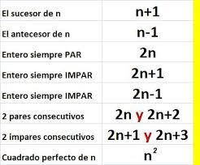

Tema 1: Lenguaje Algebraico
El lenguaje algebraico es una forma de traducir a símbolos y números lo que normalmente tomamos como expresiones particulares. El Término, es una expresión algebraica donde hay solo operaciones de multiplicación y división de letras y números, tanto el numero como la letra puede estar elevado a una potencia.
